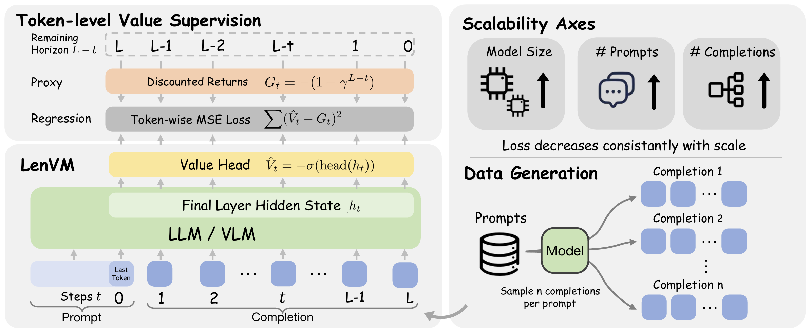
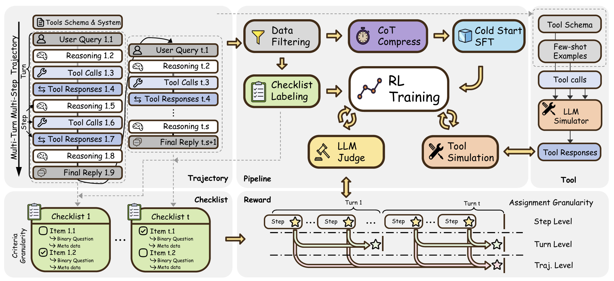
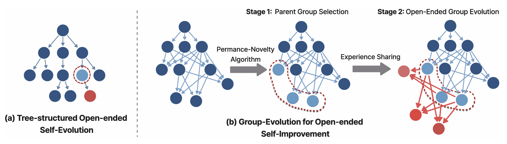
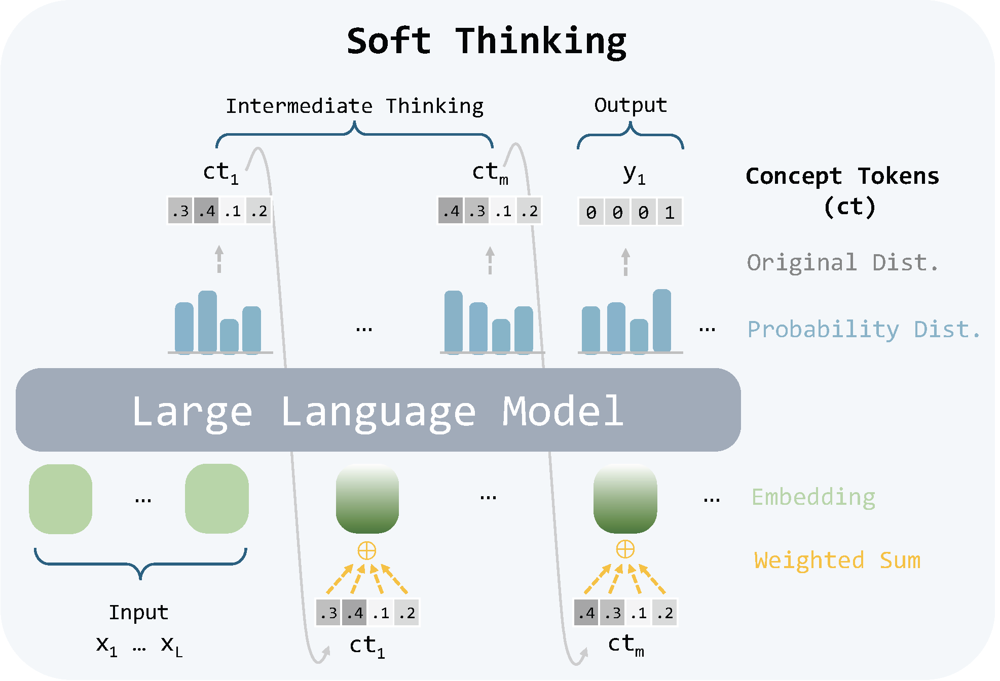
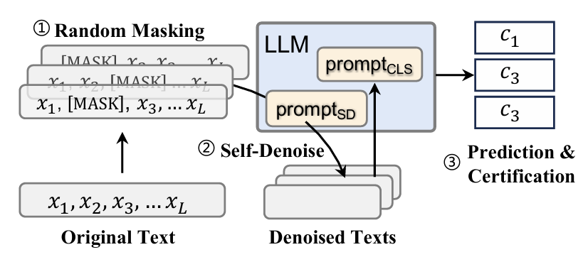
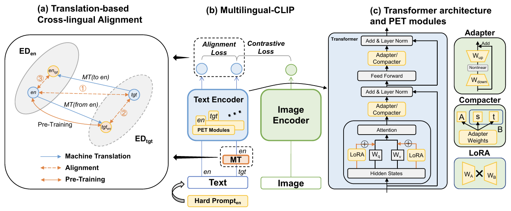

Zhen Zhang (张震)
UC, Santa Barbara
I am a Fourth year Ph.D. student in the Department of Computer Science at UC Santa Barbara, fortunate to be advised by Professor Xin Eric Wang.
Previously, I was a member of THUNLP supervised by Professor Zhiyuan Liu. In the summer of 2022, I conducted research under Professor Xin Eric Wang at UCSC.
My research focuses on LLM, Agent, Reasoning, RL and Efficiency.
Recent News
Selected Publications

COLM'26 Length Value Model: Scalable Value Pretraining for Token-Level Length Modeling
Paper / Code / HuggingFace / Project

arXiv CM2: Reinforcement Learning with Checklist Rewards for Multi-Turn and Multi-Step Agentic Tool Use
Paper / Code / HuggingFace




Experience
Student Researcher
Bytedance Inc, Seed Team
June 2026 - Now
Work on LLM post-training and RL scaling.

GenAI Research Intern
Zoom Inc., GenAI Research Group
June 2025 - September 2025
Worked on Multi-Turn Multi-Step tool Use Agent.

Machine Learning Engineer (Intern)
Microsoft STCA, WebXT — Search & Distribution
Apr 2024 - Sep 2024
Optimized Bing Search models for TL;DR generation in RAG scenarios; data generation pipelines; reducing hallucination risks with DPO.
Academic Service
Reviewer
Conferences: ICLR 2026, NeurIPS 2025/2026, ACL 2024/2025/2026, EMNLP 2024/2025/2026
Education
Ph.D. in Computer Science
UC Santa Barbara, USA
Advisor: Prof. Xin Eric Wang

B.E. in Physics
Tsinghua University, China